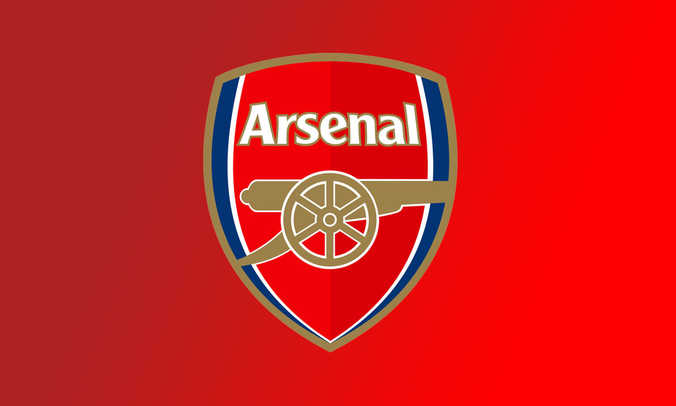
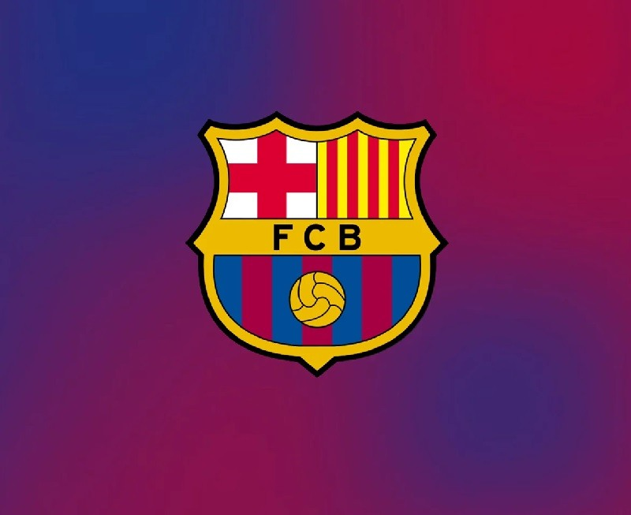
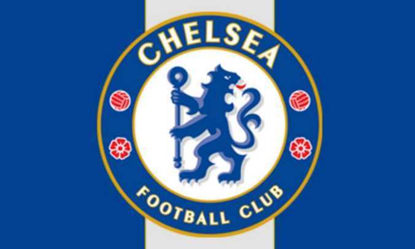
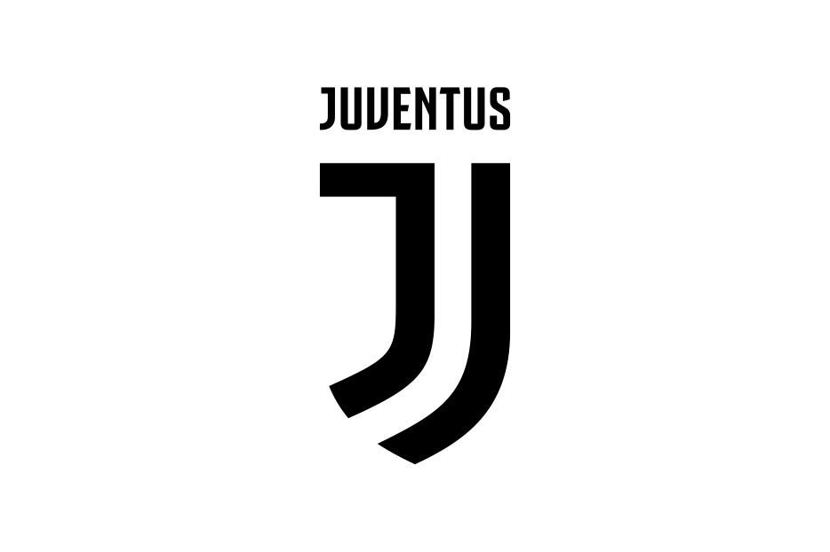
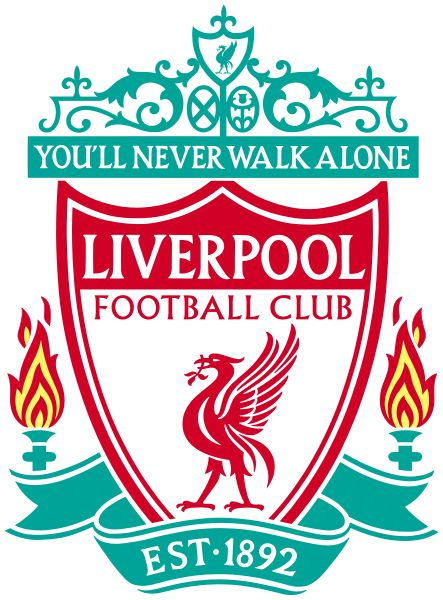
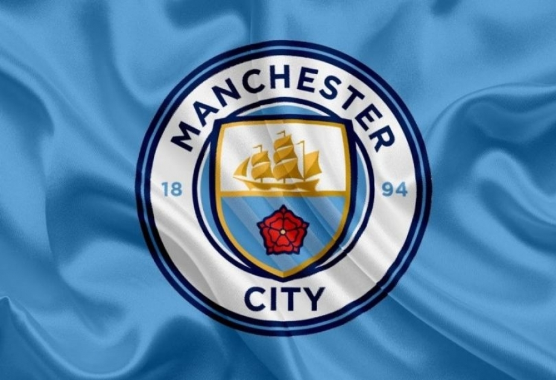
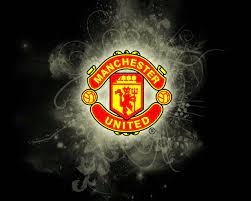

Реал Мадрид - один из самых титулованных клубов мира, ФИФА назвало его лучшим футбольным
клубом мира ХХ века. «Реал» имеет самый большой бюджет в мире. Это один из трех клубов, которые не покидали
высший дивизион Испании.
Полное название: Real Madrid Club de Fútbol
Основан: 6 марта 1902
Стадион: «Сантьяго Бернабеу»
Прозвища: "королевский клуб", "сливочные", "галактикос".

Арсенал - профессиональный футбольный клуб, тринадцатикратный победитель английского
чемпионата и двенадцатикратный обладатель Кубка Англии. Является самым титулованным клубом Лондона, опережая
лондонский «Челси» на 9 национальных трофеев. С момента своего основания в 1886 году, большую часть истории
провел в Высшем Дивизионе, являясь рекордсменом по количеству сезонов проведенных к ряду, начиняя с 1919 года.
Наивысшими достижениями «канониров» на европейской арене считается победа в Кубке обладателей Кубков УЕФА в 1994
году. Также «Арсенал» четыре раза становился финалистом главных европейских трофеев, включая лигу чемпионов
2006, однако всегда проигрывал.
Официальное название: Футбольный клуб «Арсенал Лондон» (Arsenal London Football Club)
Дата и место основания: 1886, Западный Лондон (Англия)
Стадион: «Эмирэйтс» (60 361)

Футбольный клуб Барсело́на (Barcelona), коротко «Ба́рса» (Barça) — каталонский
футбольный клуб из города Барселона. На данный момент является одним из сильнейших в испанском и мировом
футболе. Клуб является 26-кратным чемпионом Испании, 30-кратным победителем Кубка Испании, и 13-кратным
обладателем Суперкубка Испании. На счету «Барселоны» также пять побед в самом престижном европейском турнире –
Лиге Чемпионов. Еще четыре раза «Барса» выигрывали Кубок УЕФА,а также побеждала в трех клубных чемпионата Мира
Год основания: 1899;
Основатели: Группа швейцарских, британских, испанских и каталонских футболистов во главе с Жоаном Гампером;
Девиз: «Больше, чем клуб» («Més que un club»), «Барса» - это больше, чем просто клуб» («El Barca es mes que un
club»);
Прозвища болельщиков: «кулес» («culés»).

Челси - английский футбольный клуб, многократный чемпион Англии и один из пяти клубов,
становившихся чемпионами английской Премьер-Лиги (с 1992). ФК «Челси» был основан в 1905 году группой
энтузиастов, желавших создать в Лондоне боеспособный коллектив, который будет представлять столицу в
национальном первенстве. Первых успехов «Челси» добился во второй половине XX века, завоевав сразу два Кубка
Англии. Основные достижения в истории лондонского клуба связывают с российским бизнесменом Романом Абрамовичем,
который купил «Челси» в 2004 году. Домашние матчи «аристократы» проводят на стадионе «Стэмфорд Бридж»,
расположенном в западной части Лондона. Принципиальными соперниками считается другой лондонский клуб «Арсенал»,
а также «Манчестер Юнайтед» и «Лидс Юнайтед».
Полное название: Футбольный клуб «Челси» (Chelsea Football Club)
Дата и место основания: 10 марта 1905, Западный Лондон
Домашний стадион: «Стэмфорд Бридж» (41 837)

Ювентус - футбольный клуб из города Турина, самый титулованный клуб Италии и один из
самых успешных клубов на планете. «Ювентус» был основан в 1897 году, являясь одним из самых старых клубов Серии
A. В 1999 году «черно-белые» взяли Кубок Интертото и стали единственным клубом в мире, которому удалось победить
во всех турнирах, проводимых под эгидой УЕФА. Свои домашние матчи проводит на стадионе «Ювентус», открытый в
сентябре 2011 в честь 150-летия объединения Италии. Многочисленная армия болельщиков «Юве» насчитывает свыше 15
млн. человек по всему миру. Лучшим бомбардиром, а также рекордсменом по количеству проведенных матчей за «Юве»
является Алессандро Дель Пьеро.
Официальное название: Акционерное общество футбольный клуб «Ювентус» (Juventus Football Club S.p.A)
Дата и место основания: 1 ноября 1897 год, Турин (Италия)
Стадион: Ювентус (41 000)

Ливерпуль – профессиональный футбольный клуб из одноименного британского города. Был
основан 15 марта 1892 года в графстве Мерсисайд Джоном
Хоулдингом. С этого момента «Ливерпуль» регулярно выступал в Высшем Дивизионе Англии, а с середины XX-го века
начал представлять Англию в Еврокубках. В активе «Ливерпуля» 18 побед в чемпионате Англии, 5 побед в Лиге
Чемпионов и 11 в Кубке Англии. Он так же выигрывал 8 трофеев Кубка Лиги (рекорд) и 15 раз становился обладателем
Суперкубка Англии. По числу европейских трофеев считается самым успешным клубом Англии (3 Кубка УЕФА, 3
Суперкубка и 5 трофеев ЛЧ). К концу 00-х годов «Ливерпуль» являлся одним из богатых клубов мира, а в 2014 вышел
на первую строчку «Forbes» с бюджетом в 651 миллион.
Официальное название: Футбольный клуб «Ливерпуль» (Liverpool Football Club)
Дата основания: 15 марта 1892 года
Домашний стадион: «Энфилд» (54 167)

Манчестер Сити - профессиональный клуб из города Манчестер, основанный в 1880 году.
Является одним из самых титулованных клубов Англии, а также четвертым клубом АПЛ по количеству завоеванных
титулов (4). Долгое время команда находилась в тени своих соседей – «Юнайтед», оформив первое чемпионство лишь в
1937 году. Новая эпоха в истории «Манчестер Сити» наступила в XXI века, когда в клуб пришли значимые катарские
инвестиции. Принципиальным соперником «горожан» являются «красные дьяволы», с которыми разыгрывается
«манчестерское дерби».
Полное название: Футбольный клуб «Манчестер Сити» (Manchester City Football Club)
Дата и место основания: 1880 год, графство Большой Манчестер

Манчестер Юнайтед - один из самых успешных английских клубов, а также самый титулованный
клуб английской Премьер-Лиги. Датой основания «МЮ» считается 1878 год, когда группа рабочих-железнодорожников из
Манчестера основала команду «Ньютон Хит». В 1907 году «Манчестер» выиграл свой первый чемпионский титул, а в
1922 впервые вылетел во вторую лигу. В 1968 году стал первым английским клубом, добившимся успехов на
европейской арене, выиграв Кубок европейских чемпионов.
Полное название: Футбольный клуб «Манчестер Юнайтед» (Manchester United Football Club)
Дата и место основания: 1878 год, Стретфорд, Большой Манчестер
Стадион: «Олд Траффорд» (76 731)